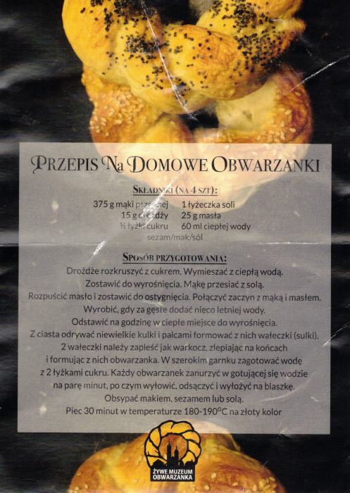
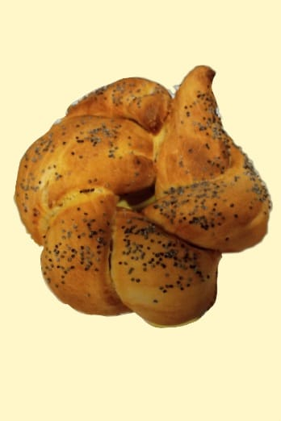

Obwarzanki
Historia obwarzanka sięga bardzo dawnych czasów. Pierwsze wzmianki o nim pojawiają się już w 1394 roku. W 1496 roku Jan Olbracht dał krakowskim piekarzom wyłączne prawo do wypiekania i sprzedawania obwarzanków. Obowiązywało ono do 1849 roku.
Wyraz „obwarzanek” wywodzi się od słowa "obwarzać", co nawiązywało do sposobu, w jaki się go robiło.
Obwarzanki można zrobić samodzielnie w domu lub w Muzeum Żywego Obwarzanka. (Obok wypiek własny)

